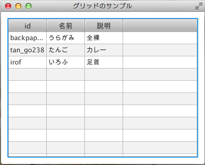
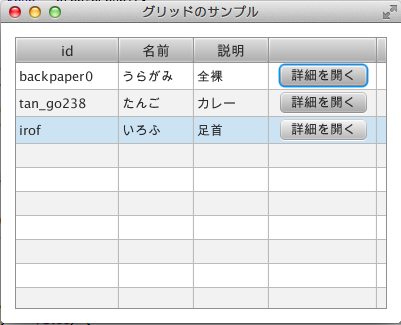
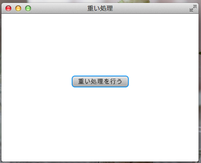
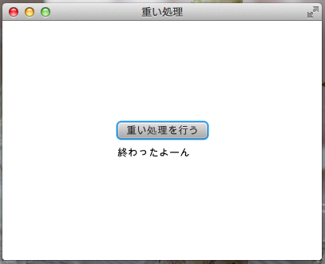

JavaFXでクラサバする事を考えた
私はエスアイヤーでギョームアプリ作ってるのでその辺りにJavaFXぶっ込んだらどうなるか考えてみました。
とりあえず次に挙げた機能が必要っぽいかなーと思います。
- 画面遷移
- 検索結果などのグリッド表示
- グリッドから詳細画面を開く的なやつ
- ダイアログ
- バックグラウンド処理
- サーバとの通信
画面遷移
Hoge駆動の忘年会というぁゃしぃ集まりでは
- Stage#setScene(Scene) でSceneを入れ替える
- Scene#setRoot(Parent) でルートノードを入れ替える
という案を挙げてみました。 このふたつのうちSceneを入れ替える方法だと画面がチラついてしまいましたので ルートノードを入れ替える方法がベターかなー、と思っていましたが、 StackPaneあたりに必要なだけNodeを突っ込んでvisibleを切り替える、 というのがもっと良いんじゃないかと現時点では思っています。
package sample;
import javafx.application.Application;
import javafx.event.ActionEvent;
import javafx.event.EventHandler;
import javafx.scene.Scene;
import javafx.scene.control.Button;
import javafx.scene.layout.BorderPane;
import javafx.scene.layout.StackPane;
import javafx.stage.Stage;
public class ScreenTransitionSample extends Application {
public static void main(String[] args) {
launch(args);
}
@Override
public void start(Stage stage) throws Exception {
final BorderPane firstPane = new BorderPane();
Button next = new Button("次へ行く");
firstPane.setCenter(next);
final BorderPane secondPane = new BorderPane();
Button prev = new Button("前へ戻る");
secondPane.setCenter(prev);
secondPane.setVisible(false);
StackPane root = new StackPane();
root.getChildren().add(firstPane);
root.getChildren().add(secondPane);
next.setOnAction(new EventHandler<ActionEvent>() {
@Override
public void handle(ActionEvent event) {
firstPane.setVisible(false);
secondPane.setVisible(true);
}
});
prev.setOnAction(new EventHandler<ActionEvent>() {
@Override
public void handle(ActionEvent event) {
firstPane.setVisible(true);
secondPane.setVisible(false);
}
});
Scene scene = new Scene(root, 400, 300);
stage.setScene(scene);
stage.setTitle("画面遷移");
stage.show();
}
}
検索画面などのグリッド表示
TableView を使います。
Scene Builderを使って画面を組み立てる場合はまずTableViewをペタっと置いて、 カラムを足す場合はTableColumnを貼付けたTableViewへペロっと置きます。
データを表示するときは TableColumn#setCellValueFactory(Callback) を使って値のファクトリーを設定して、 TableViewのitemsへaddします。
package sample;
import java.net.URL;
import java.util.ResourceBundle;
import javafx.fxml.FXML;
import javafx.fxml.Initializable;
import javafx.scene.control.TableColumn;
import javafx.scene.control.TableView;
import javafx.scene.control.cell.PropertyValueFactory;
public class GridController implements Initializable {
@FXML
private TableView<Account> accounts;
@FXML
private TableColumn<Account, String> id;
@FXML
private TableColumn<Account, String> name;
@FXML
private TableColumn<Account, String> desc;
@Override
public void initialize(URL location, ResourceBundle resources) {
id.setCellValueFactory(new PropertyValueFactory<Account, String>("id"));
name.setCellValueFactory(new PropertyValueFactory<Account, String>("name"));
desc.setCellValueFactory(new PropertyValueFactory<Account, String>("desc"));
Account account1 = Account.newInstance("backpaper0", "うらがみ", "全裸");
Account account2 = Account.newInstance("tan_go238", "たんご", "カレー");
Account account3 = Account.newInstance("irof", "いろふ", "足首");
accounts.getItems().add(account1);
accounts.getItems().add(account2);
accounts.getItems().add(account3);
}
}
こんな感じになります。
グリッドから詳細画面を開く的なやつ
TableColumn#setCellFactory(Callback) を使います。 Callback実装クラスではセル毎にcallメソッドが呼ばれるようですが、 ここでTableCellを作成して返します。 TableCellではsetGraphicメソッドでボタンをセットしています。 これでセルにボタンを置く事が出来るようです。
public class GridController implements Initializable {
...
@FXML
private TableColumn<Account, String> opener;
@Override
public void initialize(URL location, ResourceBundle resources) {
opener.setCellFactory(new OpenerFactory());
opener.setCellValueFactory(new PropertyValueFactory<Account, String>("id"));
...
}
}
class OpenerFactory implements Callback<TableColumn<Account, String>, TableCell<Account, String>> {
@Override
public TableCell<Account, String> call(TableColumn<Account, String> param) {
TableCell<Account, String> tableCell = new TableCell<Account, String>() {
private Pane pane = createPane();
private String id;
private Pane createPane() {
HBox pane = new HBox();
pane.setAlignment(Pos.CENTER);
Button button = new Button("詳細を開く");
button.setOnAction(new EventHandler<ActionEvent>() {
@Override
public void handle(ActionEvent event) {
System.out.println(id);
}
});
pane.getChildren().add(button);
return pane;
}
@Override
protected void updateItem(String id, boolean empty) {
super.updateItem(id, empty);
if (empty == false) {
this.id = id;
setGraphic(pane);
}
}
};
return tableCell;
}
}
ボタンが置けました。
ダイアログ
Swingで言うところのJOptionPaneのようなお手軽ダイアログは無いようですが、Stageを使う事で実現可能っぽいです。
バックグラウンド処理
Service を使います。 SwingWorker的なやつです。 こんな感じの雰囲気で。
Service<String> service = new Service<String>() {
@Override
protected Task<String> createTask() {
Task<String> task = new Task<String>() {
@Override
protected String call() throws Exception {
TimeUnit.SECONDS.sleep(5);
return "終わったよーん";
}
@Override
protected void succeeded() {
text.setText(getValue());
}
};
return task;
}
};
service.start();
Service#createTask()でTaskを返しています。 Taskではcallメソッドを実装していますが、これがSwingWorkerでいうdoInBackgroundのようです。 succeededメソッドは処理が正常終了したときに呼ばれます。 他にキャンセルしたときに呼ばれるcancelledメソッドや失敗したときに呼ばれるfailedメソッドがあります。
しかし結果がどうあれ必ず呼ばれるfinally的なメソッドがありません。 これは不便な気がします。
finally的なアレを実現する方法として今んところ思いついているのは、Taskには実行中かそうでないかを表すrunningというbooleanのプロパティがあるので、 それにリスナーを追加します。
task.runningProperty().addListener(
new ChangeListener<Boolean>() {
@Override
public void changed(ObservableValue<? extends Boolean> observable,
Boolean oldValue, Boolean newValue) {
if (!newValue) {
System.out.println("終わったよーん");
}
}
});
もっと良い方法があったら教えて欲しいです。
あと、処理中にProgressIndicatorというのを表示しておくと良い感じになりそうです。 StackPaneにメインとなるPaneとProgressIndicatorを含んだPaneを突っ込んでvisibleで切り替えます。
というわけでバックグラウンド処理のサンプルを次に記載します。
package sample;
import java.util.concurrent.TimeUnit;
import javafx.application.Application;
import javafx.concurrent.Service;
import javafx.concurrent.Task;
import javafx.concurrent.WorkerStateEvent;
import javafx.event.ActionEvent;
import javafx.event.EventHandler;
import javafx.geometry.Pos;
import javafx.scene.Scene;
import javafx.scene.control.Button;
import javafx.scene.control.ProgressIndicator;
import javafx.scene.layout.GridPane;
import javafx.scene.layout.StackPane;
import javafx.scene.text.Text;
import javafx.stage.Stage;
public class LongTimeTaskSample extends Application {
public static void main(String[] args) {
launch(args);
}
@Override
public void start(Stage primaryStage) throws Exception {
//インジケータを含むPaneを組み立てる
final GridPane progressPane = new GridPane();
progressPane.setAlignment(Pos.CENTER);
ProgressIndicator indicator = new ProgressIndicator();
progressPane.add(indicator, 0, 0);
//メインとなるPaneを組み立てる
GridPane mainPane = new GridPane();
mainPane.setAlignment(Pos.CENTER);
mainPane.setHgap(10);
mainPane.setVgap(10);
Button button = new Button("重い処理を行う");
mainPane.add(button, 0, 0);
final Text text = new Text();
mainPane.add(text, 0, 1);
//StackPaneに突っ込む
StackPane root = new StackPane();
root.getChildren().add(mainPane);
root.getChildren().add(progressPane);
//最初はインジケータは見えなくする
progressPane.setVisible(false);
button.setOnAction(new EventHandler<ActionEvent>() {
@Override
public void handle(ActionEvent event) {
//ボタンが押されたらインジケータを見せる
progressPane.setVisible(true);
text.setText("");
Service<String> service = new Service<String>() {
@Override
protected Task<String> createTask() {
Task<String> task = new Task<String>() {
@Override
protected String call() throws Exception {
TimeUnit.SECONDS.sleep(5);
return "終わったよーん";
}
};
task.setOnSucceeded(new EventHandler<WorkerStateEvent>() {
@Override
public void handle(WorkerStateEvent event) {
//タスクが終わったらインジケータを見えなくする
progressPane.setVisible(false);
text.setText(getValue());
}
});
return task;
}
};
service.start();
}
});
Scene scene = new Scene(root, 400, 300);
primaryStage.setScene(scene);
primaryStage.setTitle("重い処理");
primaryStage.show();
}
}
実行したらこんな感じです。
ポチっと。
くるくるー。

どーん！
ちなみにこのコードだとインジケータが表示されているときにボタンはクリックできなくなっていますが、 タブでフォーカス移動してスペースキーで押せたりします。 きっとjava.awt.FocusTraversalPolicyのようなものがあると思うのでまた勉強しておくことにします。
サーバとの通信
( ﾟ∀ﾟ)o彡°JAX-RS！JAX-RS！
まとめ
ここ数日JavaFXを触ってみてエスアイヤーのギョームアプリも普通に書けそうだなー、と感じました。
また今回はフォーカスしませんでしたがFXMLで画面を組めるのがすごく良いですね。 Scene Builderでサクッとモックを作って、OKならそのまま実装する、というスタイルが楽にできそうで嬉しいです。
あとScene Builderが特定のIDEに依存していないのも嬉しいですね。 好きなIDEを使えます。
という訳でJava 8がリリースされたら是非ともJavaFXでアプリケーション組みたいなー、と思ったのでした。
おわり。
参考資料
- JavaFX Documentation
- JavaFX in the Box
- AOEの日記 ※リンクURLはJavaFXタグを検索しています
- Java技術最前線：ITpro ※2012年8月～のテーマ「JavaFX 2で始めるGUI開発」